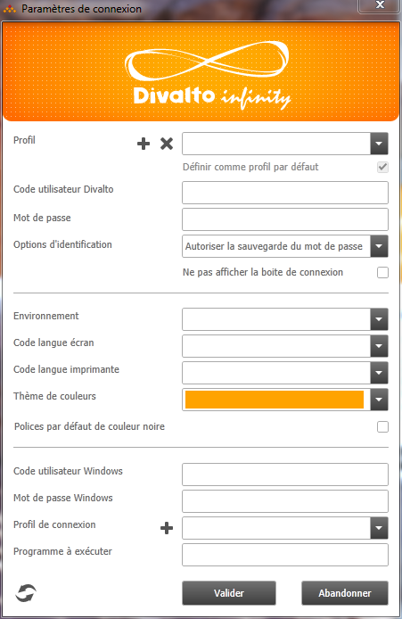

Lorsque l'utilisateur clique sur le bouton Options Avancées de la boîte de connexion, la boîte de dialogue suivante est ouverte :

Si l'utilisateur n'a pas les droits d'administration, le bouton  est aussi affiché à droite du bouton Actualiser.
est aussi affiché à droite du bouton Actualiser.
Les champs à saisir permettent de configurer la connexion au serveur, de sélectionner son environnement de travail, de choisir ses préférences (thème de couleurs, couleur des polices par défaut, langues d'affichage et d'impression) :
|
Profil |
Ce multi-choix propose la liste des profils d'utilisation (plus un profil non identifié créé à l'installation).
|
|
Définir comme profil par défaut |
Cette option permet de spécifier que le profil courant devient le "profil par défaut". Le profil par défaut est automatiquement proposé à chaque nouvelle connexion (à moins de lancer l'application par l'intermédiaire d'un raccourci imposant l'utilisation d'un profil particulier). |
|
Code utilisateur Divalto |
Code utilisateur et mot de passe Divalto. |
|
Options d'identification |
Cette option indique la « stratégie de sécurité » à employer pour Divalto :
En conséquence, le mot de passe ne peut pas être renseigné ici ; l’option "Ne pas afficher la boîte de connexion" reste disponible mais ne s'appliquera qu'à partir de la seconde connexion à Divalto pour la session Windows en cours.
Remarque : La stratégie de sécurité ne peut être modifiée qu’en mode administrateur (voir le paragraphe "Passage en mode administrateur") ou si l'administrateur décide de la laisser libre au niveau du profil de connexion. |
|
Ne pas afficher la boîte de connexion |
Cette option permet de sauter la phase d'identification lors d'une connexion à Divalto (la fenêtre de connexion n'est plus affichée). Elle permet d’ouvrir directement l’application, sans répondre à aucune question préalable. |
|
Environnement |
Ces options permettent de choisir un environnement de travail et une langue d'affichage et d'impression. |
|
Thème de couleurs |
Thème de couleurs, à choisir dans la liste des thèmes proposés. |
|
Polices par défaut de couleur noire |
Les caractères des polices par défaut sont de couleur grise. |
|
Code utilisateur et mot de passe Windows |
Hors mode local, tout utilisateur doit s’identifier sur le serveur d’applications avec un code utilisateur et un mot de passe Windows. |
|
Profil de connexion |
Ce multi-choix permet de définir les paramètres de la connexion à établir entre le poste client et le serveur d’applications. Un profil de connexion contient notamment le type de transport (Local, LAN, Service Web) et l’adresse du serveur d’applications. |
|
Programme à exécuter |
Nom du programme à lancer sur le serveur d’applications. Par défaut (champ non renseigné), le programme est le menu de Divalto : Divalto.dhop. |
Bouton Réactualiser
Ce bouton permet de réactualiser la liste des profils de connexion, des environnements et des langues depuis un serveur d’applications. On rapatrie ainsi localement les dernières mises à jour effectuées sur le serveur.
Attention : Ces listes sont conservées sur le poste client pour chaque profil de connexion. Ainsi, si différents profils de connexion pointent vers le même serveur d’applications, il conviendra de réactualiser la liste pour chaque profil.
Remarque :
Une mise à jour automatique est aussi effectuée lorsque l'utilisateur se reconnecte au serveur plus d'une heure après sa dernière connexion.
A destination de l'administrateur :
Ce bouton permet également de commander la mise à jour de la base de registre du serveur d’applications pour le profil de l’utilisateur Windows courant. Ainsi, des paramètres modifiés sur le serveur pour un autre compte utilisateur puis propagés seront immédiatement appliqués (par exemple, une nouvelle imprimante ajoutée sur le serveur). Là aussi, une mise à jour automatique a lieu lorsque l'utilisateur se reconnecte au serveur plus d'une heure après sa dernière connexion.
Sur un poste client, les profils de connexion ne sont jamais supprimés, même s'ils n'existent pas ou plus sur le serveur d'applications, cela pour éviter de perdre une connexion qui n'aurait pas été définie ou qui aurait été supprimée côté serveur. Côté client, la suppression des profils de connexion obsolètes doit donc être effectuée à la main.
Les profils de connexion sont stockés dans la base de registre du poste client à l'adresse suivante :
HKEY_CURRENT_USER\Software\Divalto\divalto.ini\ProfilConnexion
Passage en mode administrateur (bouton )
)
Lorsque l'utilisateur ne dispose pas du droit d'administration (voir la rubrique Profils de connexion), certaines options de connexion avancées ne sont pas disponibles. Un bouton en forme de cadenas est toutefois affiché pour les rendre accessibles. Pour passer en mode administrateur, cliquez sur ce bouton, renseignez le mot de passe et validez.